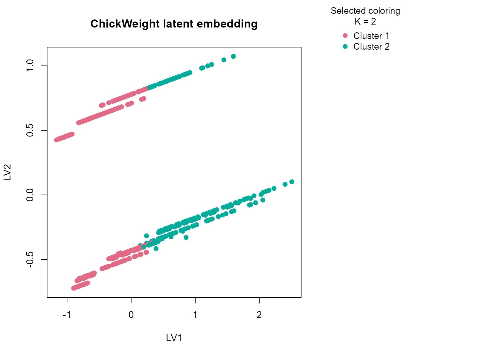
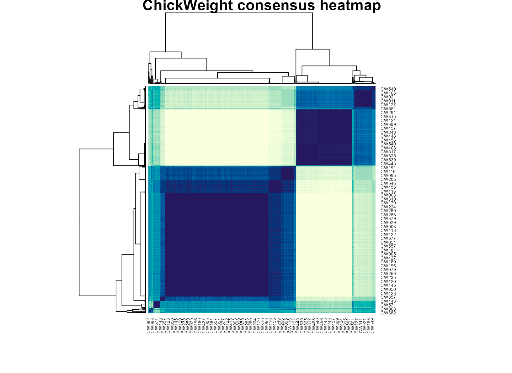

Background
ChickWeight records repeated chick body weights across
time under different diet conditions. It is a useful biological growth
dataset because the numeric trajectory is strong, but diet still
provides an important categorical context. That combination makes it a
good fit for a typed consensus workflow.
Objective
The objective is to determine whether uccdf recovers
stable growth regimes from weight, diet, and a coarse time band, and to
inspect whether the resulting clusters reflect biologically
interpretable stages or response patterns rather than just arbitrary
slices of the repeated-measures table.
Data preparation
cw_df <- as.data.frame(ChickWeight)
cw_df$sample_id <- sprintf("CW%03d", seq_len(nrow(cw_df)))
cw_df$Diet <- factor(cw_df$Diet)
cw_df$time_band <- ordered(
cut(cw_df$Time, breaks = c(-Inf, 5, 12, Inf), labels = c("early", "mid", "late")),
levels = c("early", "mid", "late")
)
analysis_cw <- cw_df[, c("sample_id", "weight", "Diet", "time_band")]
head(analysis_cw)
#> sample_id weight Diet time_band
#> 1 CW001 42 1 early
#> 2 CW002 51 1 early
#> 3 CW003 59 1 early
#> 4 CW004 64 1 mid
#> 5 CW005 76 1 mid
#> 6 CW006 93 1 midAnalysis
fit_cw <- fit_uccdf(
analysis_cw,
id_column = "sample_id",
candidate_k = 1:5,
n_resamples = 20,
n_null = 39,
row_fraction = 0.85,
col_fraction = 0.85,
seed = 707
)
fit_cw$selection
#> $alpha
#> [1] 0.05
#>
#> $global_p_value
#> [1] 0.025
#>
#> $null_family
#> [1] "independence_marginal_null"
#>
#> $detected_structure
#> [1] TRUE
#>
#> $best_exploratory_k
#> [1] 2
#>
#> $best_supported_k
#> [1] 2
select_k(fit_cw)
#> k stability null_mean null_sd stability_excess z_score p_value supported
#> 1 2 0.6526539 0.2928108 0.02094936 0.35984306 17.176797 0.025 TRUE
#> 2 3 0.5547369 0.3206199 0.05562722 0.23411700 4.208676 0.025 TRUE
#> 3 4 0.5199213 0.5940069 0.06359984 -0.07408558 -1.164870 0.900 FALSE
#> 4 5 0.6151166 0.7971678 0.04476326 -0.18205113 -4.066975 1.000 FALSE
#> objective
#> 1 17.038168
#> 2 3.988954
#> 3 -1.442129
#> 4 -4.388863Results
cw_assign <- merge(augment(fit_cw), cw_df, by.x = "row_id", by.y = "sample_id", all.x = TRUE)
head(cw_assign)
#> row_id cluster confidence ambiguity exploratory_cluster
#> 1 CW001 1 0.9479527 0.05204726 1
#> 2 CW002 1 0.9482527 0.05174728 1
#> 3 CW003 1 0.9448707 0.05512928 1
#> 4 CW004 1 0.9423498 0.05765025 1
#> 5 CW005 1 0.9425387 0.05746126 1
#> 6 CW006 1 0.9518092 0.04819084 1
#> exploratory_confidence exploratory_ambiguity assignment_mode selected_k
#> 1 0.9479527 0.05204726 selected 2
#> 2 0.9482527 0.05174728 selected 2
#> 3 0.9448707 0.05512928 selected 2
#> 4 0.9423498 0.05765025 selected 2
#> 5 0.9425387 0.05746126 selected 2
#> 6 0.9518092 0.04819084 selected 2
#> exploratory_k weight Time Chick Diet time_band
#> 1 2 42 0 1 1 early
#> 2 2 51 2 1 1 early
#> 3 2 59 4 1 1 early
#> 4 2 64 6 1 1 mid
#> 5 2 76 8 1 1 mid
#> 6 2 93 10 1 1 mid
aggregate(
cbind(weight, Time, confidence) ~ cluster,
cw_assign,
function(x) round(mean(x, na.rm = TRUE), 2)
)
#> cluster weight Time confidence
#> 1 1 78.60 7.1 0.91
#> 2 2 201.66 17.4 0.90
table(cw_assign$cluster, cw_assign$Diet)
#>
#> 1 2 3 4
#> 1 177 73 65 60
#> 2 43 47 55 58
table(cw_assign$cluster, cw_assign$time_band)
#>
#> early mid late
#> 1 149 179 47
#> 2 0 17 186
round(prop.table(table(cw_assign$cluster, cw_assign$time_band), margin = 1), 3)
#>
#> early mid late
#> 1 0.397 0.477 0.125
#> 2 0.000 0.084 0.916
plot_embedding(fit_cw, color_by = "selected", main = "ChickWeight latent embedding")
plot_consensus_heatmap(fit_cw, main = "ChickWeight consensus heatmap")
Discussion
The selected two-cluster solution usually separates an earlier lighter growth regime from a later heavier regime, but the result is not just a copy of the time variable. The time-band table shows enrichment, while the diet table helps show that diet composition still differs across the clusters. That means the partition reflects a joint pattern in developmental timing and growth response.
This is a useful biological example because repeated-measures growth data can be clustered in many brittle ways. A stability-first summary that returns only two supported regimes is often more helpful than a larger segmentation that overstates fine-grained temporal variation.
Interpretation
For ChickWeight, the clusters are best interpreted as
stable growth-response regimes spanning lighter earlier observations and
heavier later observations, with diet composition contributing to how
the groups are organized. The result is descriptive rather than
mechanistic, but it provides a compact and defensible summary of the
growth table.